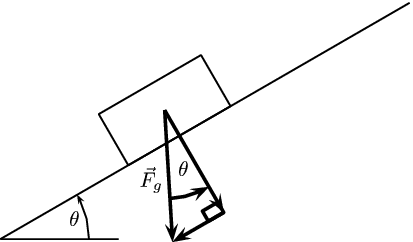
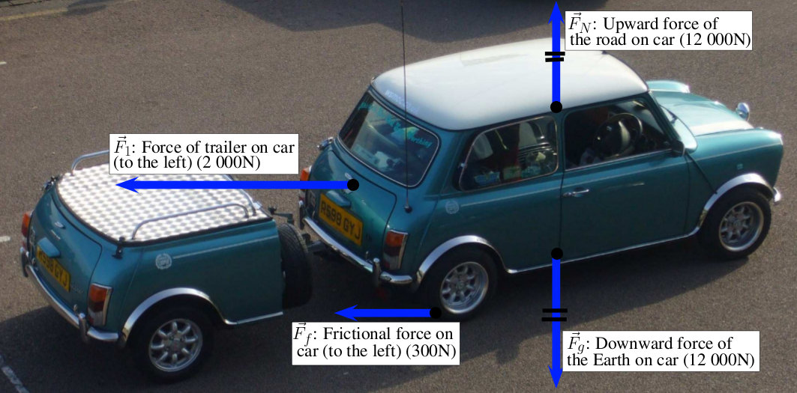
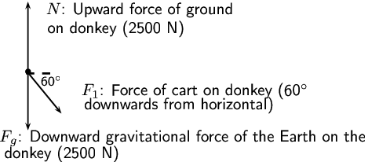

In a free-body diagram, the object of interest is drawn as a dot and all the forces acting on it are drawn as arrows pointing away from the dot. We can redraw the two force diagrams above as free body diagrams:
We have looked at resolving forces into components. There is one situation we will consider where this is particularly useful, problems involving an inclined plane. It is important because the normal force depends on the component of the gravitational force that is perpendicular to the slope.
Let us consider a block on an inclined plane. The plane is inclined at an angle to the horizontal. It feels a gravitational force, , directly downwards. This force can be broken into components that are perpendicular to the plane and parallel to it. This is shown here:

<code>
(0,0)(7.5,4)
%\rput{30}{\psaxes{->}(0,0)(0,0)(10,5)}
\psline(0,0)(2,0)
\psarc{->}(0,0){1.5}{0}{30}
\rput(1.25,.35){$\theta$}
% Adapted to enlarge the gravity resolution into components
\rput(3.1,1.2){$\theta$}
\rput[r](2.75,1){$\vec{F}_g$}
\rput{30}{
\psline(0,0)(8,0)
\psframe(2.5,0)(4.5,1)
\rput(0,.5){\scalebox{2}{
\psline{->}(1.75,0)(1.75,-1)
\psframe(1.75,-1)(1.6,-.9)
\psline{->}(1.75,-1)(1.24999,-1)
\psline{->}(1.75,0)(1.24999,-1)
\psarc{->}(1.75,0){.75}{243}{270}}}
}
</code>
We can use any coordinate system to describe the situation and the simplest thing to do is to make the -axis of the Cartesian coordinate system align with the inclined plane. Here is the same physical situation with the coordinate system drawn in:
This means that the components of gravitational force are aligned (parallel) with one of the axes of the coordinate system. We have shown in the figures that the angle between the horizontal and the incline is also the angle between the gravitational force and its component perpendicular to the inclined plane (this is normal to the plane). Using this angle and the fact that the components form part of a right-angled triangle we can calculate the components using trigonometry:
A block on an inclined plane experiences a force due to gravity, of ~ straight down. If the slope is inclined at to the horizontal, what is the component of the force due to gravity perpendicular and parallel to the slope?
Components
We know that for a block on a slope we can resolve the force due to gravity, into components parallel and perpendicular to the slope.
Calculations
This problem is straightforward as we know that the slope is inclined at an angle of . This is the same angle we need to use to calculate the components, therefore:
Final answer
The component of that is perpendicular to the slope is =~ in the negative -direction.
The component of that is perpendicular to the slope is =~ in the negative -direction.
Exercises
A block on an inclined plane experiences a force due to gravity, of ~ straight down. If the slope is inclined at to the horizontal, what is the component of the force due to gravity perpendicular and parallel to the slope?
We know that for a block on a slope we can resolve the force due to gravity, into components parallel and perpendicular to the slope.
The slope is inclined at an angle of . This is the same angle we need to use to calculate the components, therefore:
The component of that is perpendicular to the slope is =~ in the negative -direction.
The component of that is perpendicular to the slope is =~ in the negative -direction.
A block on an inclined plane is subjected to a force due to gravity, of ~ straight down. If the component of the gravitational force parallel to the slope is =~ in the negative -direction (down the slope), what is the incline of the slope?
We know that for a block on a slope we can resolve the force due to gravity, into components parallel and perpendicular to the slope.
We are given the horizontal component of gravity and the force due to gravity. We can use these to find the incline of the slope:
The slope is at an incline of .
Finding the resultant force
The easiest way to determine a resultant force is to draw a free body diagram. Remember from Chapter 1 that we use the length of the arrow to indicate the vector's magnitude and the direction of the arrow to show which direction it acts in.
After we have done this, we have a diagram of vectors and we simply find the sum of the vectors to get the resultant force.
(a) Force diagram of 2 forces acting on a box. (b) Free body diagram of the box.
For example, two people push on a box from opposite sides with forces of ~ and ~ respectively as shown in Figure fig-forces-1 (a). The free body diagram in Figure fig-forces-1 (b) shows the object represented by a dot and the two forces are represented by arrows with their tails on the dot.
As you can see, the arrows point in opposite directions and have different lengths. The resultant force is ~ to the left. This result can be obtained algebraically too, since the two forces act along the same line. First, as in motion in one direction, choose a frame of reference. Secondly, add the two vectors taking their directions into account.
For the example, assume that the positive direction is to the right, then:
Remember that a negative answer means that the force acts in the opposite direction to the one that you chose to be positive. You can choose the positive direction to be any way you want, but once you have chosen it you must use it consistently for that problem.
As you work with more force diagrams in which the forces exactly balance, you may notice that you get a zero answer (e.g. ~). This simply means that the forces are balanced and the resultant is zero.
Once a force diagram has been drawn the techniques of vector addition introduced in Chapter 1 can be used. Depending on the situation you might choose to use a graphical technique such as the tail-to-head method or the parallelogram method, or else an algebraic approach to determine the resultant. Since force is a vector quantity all of these methods apply.
A good strategy is:
resolve all forces into components parallel to the - and -directions;
calculate the resultant in each direction, and , using co-linear vectors; and
use and to calculate the resultant, .
Finding the resultant force
A car (experiencing a gravitational force of magnitude ~ and a normal force of the same magnitude) applies a force of ~ on a trailer (experiencing a gravitational force of magnitude ~ and normal force of the same magnitude). A constant frictional force of magnitude ~ is acting on the trailer, and a constant frictional force of magnitude ~ is acting on the car.
Draw a force diagram of all the forces acting on the car.
Draw a free body diagram of all the forces acting on the trailer.
Use the force diagram to determine the resultant force on the trailer.
Draw the force diagram for the car.
The question asks us to draw all the forces on the car. This means that we must include horizontal and vertical forces.

Determine the resultant force on the trailer.
To find the resultant force we need to add all the horizontal forces together. We do not add vertical forces as the movement of the car and trailer will be in a horizontal direction, and not up or down.
.
The normal force and the gravitational force are balanced and produced no net force on the trolley.
We need to determine the resultant force using the force of friction and the applied force. We choose to the right as positive and assume that the applied force is applied to the right, while the frictional force acts to the left.
A donkey (experiencing a gravitational force of ~) is trying to pull a cart (force due to gravity of ~) with a force of ~. The rope between the donkey and the cart makes an angle of with the cart. The cart does not move.
Draw a free body diagram of all the forces acting on the donkey.

<code>
(-.5,-1.7689062)(9.345938,1.7489063)
\psdots[dotsize=0.12](0.9009375,0.22890624)
\psline{->}(0.9009375,0.22890624)(0.9009375,1.7289063)
\psline{->}(0.9009375,0.24890625)(0.9009375,-1.0310937)
\psline{->}(0.8809375,0.22890624)(1.6209375,-0.67109376)
\psline[linewidth=0.04cm,linestyle=dashed,dash=0.16cm 0.16cm](0.8609375,0.18890625)(1.3809375,0.18890625)
\rput(1.4060937,0.02390625){\footnotesize 60$^\circ$}
\rput(3.311875,1.5589062){$N$: Upward force of ground}
\rput(2.7973436,1.1389062){on donkey (2500 N)}
\rput(4.23625,-1.2010938){$F_{g}$: Downward gravitational force of the Earth on the}
\rput(1.6275,-1.5410937){donkey (2500 N)}
\rput(4.5,-.2){$F_{1}$: Force of cart on donkey (60$^{\circ}$}
\rput(4.1,-0.5){ downwards from horizontal)}
</code>
Draw a force diagram of all the forces acting on the cart.
Find the magnitude and direction of the frictional force preventing the cart from moving.
The cart is not moving so this is static friction only. We note that the frictional force acts in the -direction only and will be equal to the component of the force applied by the donkey. The direction will be in the opposite direction that the donkey is pulling. The frictional force is: